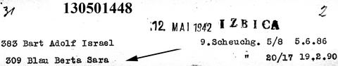
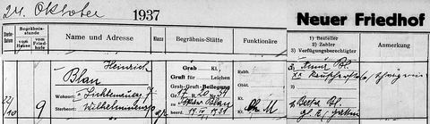

Berta Tichy
1890–1942
Life events
| Born | 19 Feb 1890 · Vienna, Austria Map · Abraham Albert Tichy and Josefa Schnürmacher. Book: M 1889-90. |
|---|---|
| Married | 1915 · Vienna, Austria Map |
| Married | 1932 · Heinrich Blau · Leopoldstädter Tempel, 1020 Tempelgasse 5, Vienna, Austria Map |
| Lived | 10 May 1942 · 1020 Grosse Mohrengasse 20, Vienna, Austria Map |
| Deportation | |
| Died | about 20 May 1942 · Sobibor Death camp, Sobibór, Lubelskie, Poland Map · Murdered by Nazis in the Holocaust. Sent from Izbica transit center to Sobibor. |
Family
Berta Tichy1890–1942

Heinrich Blau1882–1937
Photos
Berta Tichy